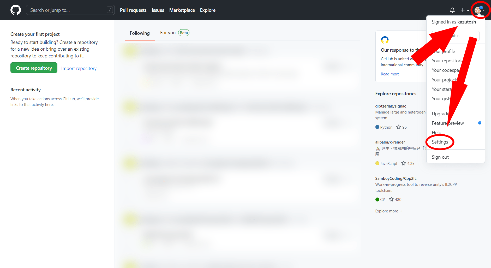

gitのインストール
このURLからgitをダウンロードをする
Git - Downloads[Windows]を選んで、
[64-bit Git for Windows Setup.]を選ぶ

ダウンロードが終わったら、インストーラを開き、画面の手順にそって進み、インストールを終わらせる
そして、コマンドプロンプトから
git --version
と打ち、Enterを押して、以下の画像のような文字が出てくることを確認する
gitの初回設定
まず、コマンドプロンプトを開く
そして、以下のコマンドでユーザ情報を設定する
git config --global user.name "自分のGitHubの名前"
git config --global user.email "自分のGitHubのEメールアドレス"
次は、GitHubアクセス時に、毎度毎度パスワードを入力しなくてもいいように、Windows側で管理してくれるように設定する
git config --global credential.helper wincred
終わったら、GitHubのWEBサイトに飛ぶ
GitHubGitHubにログインし、[Settings]を開く
そして、左のタブの一番下の[Developer settings]を開き、[Personal access tokens]→[Generate new token]を押す
以下の画像のように、Noteには分かりやすい名前、Expirationは1年後、repoにのみチェックを付けて、[Generate token]を押す
画面に出てきた ghp_ から始まる文字列をコピーする
※ghp_から始まる文字列（トークン）はパスワードと同様にアカウントへのアクセスができるものなので、自分以外の人には知られないように！！！
Windowsのコントロールパネルを開き、[ユーザーアカウント]→[資格情報マネージャー]→[Windows 資格情報]の順に進む
[汎用資格情報の追加]を押し、インターネットまたはネットワークのアドレスに git:https://自分のGitHubの名前@github.com、
ユーザー名に自分のGitHubの名前、パスワードにghp_から始まる文字列を入力し、[OK]を押す

リポジトリを作り、GitHubと紐づける
まず、コマンドプロンプトを開き、リポジトリを作りたいディレクトリに移動する
以下のコマンドを実行し、カレントディレクトリにリポジトリを作る
git init
次は、GitHubに行き、自分のアカウントにログイン後、[New]を押す
リポジトリの作成画面に行ったら、Repository nameにはリポジトリの名前、公開設定はPublicかPrivateを設定し、[Create repository]を押す
公開設定をPublicにすると、リポジトリのファイルなどが他のユーザからも見れるようなります
他のユーザに見られたくない！！！って人はPrivate推奨です
GitHubリポジトリのURLをコピーし、以下のコマンドを実行する
git branch -M main
git remote add origin "GitHubリポジトリのURL"
これで、PC上のリポジトリとGitHub上のリポジトリを紐づけることができた
リポジトリにファイルを追加し、GitHub上のリポジトリと同期させる
リポジトリにファイルを追加するには、まず、以下のコマンドで追加したいファイルをステージ状態にする
git add "ファイル名"
そして、以下のコマンドでコミットをすることにより、はじめてリポジトリにファイルが追加される
git commit -m "コミットの概要コメント"
概要コメントはどのような変更をしたのか他の人に伝えるものなので簡潔に書く
例: 〇〇を追加した。
例: ××の□□を△△に変更した。
そして、以下のコマンドでGitHub上のリポジトリと同期させる
git push -u origin master
ファイルの編集内容の同期も上記と同じ方法でできる
GitHub上のリポジトリをPCにクローンする
以下のコマンドでGitHub上のリポジトリをPC上にクローンする
git clone "GitHubリポジトリのURL"
実行すると、カレントディレクトリにGitHubリポジトリと同名のディレクトリが作成され、そのディレクトリがリポジトリになっている
GitHub上のリポジトリの内容をPC上のリポジトリに取り込む
以下のコマンドでGitHub上の内容を取り込む
git pull
このコマンドを実行するとGitHub上のリポジトリの内容がPC上のリポジトリに取り込まれる
具体的なコマンドの使い方
例: 家で書いたソースコードの続きを、学校でも書き、さらにその続きを家で書く場合
1. 家のPC上にリポジトリを作り、ソースファイルを追加する
2. 作ったリポジトリをGitHub上のリポジトリと紐づけ、pushする
3. 学校のPC上でGitHub上のリポジトリをcloneする
4. 学校のPC上の作業内容をGitHub上のリポジトリにpushする
5. 家のPC上のリポジトリでpullをする